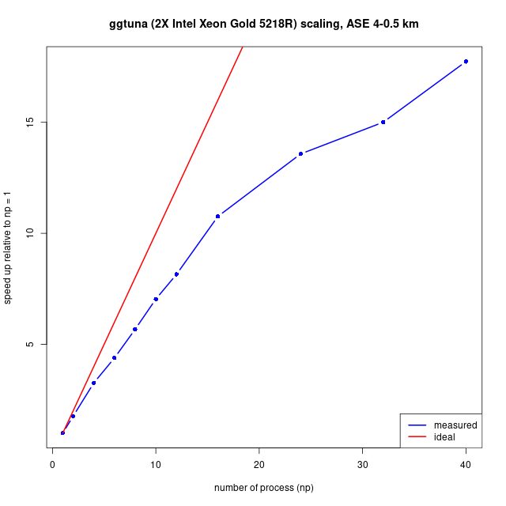

BISICLES build instructions
These are the instructions to build BISICLES against the Chombo 3.2 release. To build against the older 3.1 Chombo release, go here
To build (and run) BISICLES you need to
- Meet the system requirements
- Check out the source code
- Set up some third party dependencies
- Configure Chombo by editing some definitions in a makefile
- Configure BISICLES additional options by editing some definitions in another makefile
- Compile driver, the main standalone BISICLES executable.
- Run driver on a simple problem to ensure that it works
System requirements.
BISICLES requires the GNU/Linux operating system (actually, it should compile and run elsewhere, but we never do that), plus both C++ and FORTRAN compilers, a GNU-compatible make, subversion, and Perl. Python is optional but highly recommended - BISICLES has numerous optional python components. On the whole, life is easiest with gcc (including g++ and gfortran), and we shall assume that is what will be used. A modernish gcc is required - see the older build instructions if you want to build with gcc 4.1.2, for example. To build the parallel version, you need an MPI environment, which provides the mpicc and mpicxx (or equivalents). You will also need VisIt to view the data BISICLES produces (other programs can be put to use, but VisIt is by far the most convenient)
There are some site specific notes: look at these before proceeding if you are installing on an Ubuntu or Debian workstations, on a Cray XC30 or XC40 (e.g ARCHER, edison, cori), or on any of the other machines that BISICLES has been used before.
Check out the source code.
Since this readme file lives in the source code repository, you might have already checked the source code out. There are two source trees, Chombo, and BISICLES, and the rest of this guide assumes that you have a directory called $BISICLES_HOME which contains the two.
To obtain the source trees, you first need an ANAG repository account. Once that is sorted out, create a root directory for both source trees
> export BISICLES_HOME=/wherever/you/like #assumes bash... > mkdir -p $BISICLES_HOME > cd $BISICLES_HOME > svn co https://anag-repo.lbl.gov/svn/Chombo/release/3.2 Chombo > svn co https://anag-repo.lbl.gov/svn/BISICLES/public/trunk BISICLES
Here we have assumed that you want the the main BISICLES development branch (trunk) which is fairly stable since experimental code is developed on other branches. The advantage of trunk is that bug fixes are published there first. You may prefer the current release, which changes infrequently.
> svn co https://anag-repo.lbl.gov/svn/BISICLES/public/release/1.3 BISICLES
You may want one of the other branches, especially if you are working with any of the BISICLES developers to introduce new features, but in that case you will probably know which one you need. Note that you do not need to layout your source directories as indicated above, or even follow the rest of these notes exactly. If you want some other layout, note the following
- Chombo needs to know where your hdf5 includes and libraries are to be found. It expects these to be defined in variables HDFINCFLAGS , HDFLIBFLAGS , HDFMPIINCFLAGS, HDFMPILIBFLAGS, which are read from a file /path/to/Chombo/lib/mk/Make.defs.local, which you must create.
- Chombo will determine the location of PETSc (if needed) from the PETSC_DIR environment variable
- BISICLES needs to know where the Chombo includes and libraries are to be found (and possibly the same for python and netcdf). By default it assumes that there is a Chombo source tree at the same level as the BISICLES source tree, but this can be overridden by setting the environment variable $CHOMBO_HOME. e.g if you have Chombo in /path/to/Chombo/3.2 then set CHOMBO_HOME=/path/to/Chombo/3.2/lib
- BISICLES may need to know where python and netcdf includes and libraries are to be found, these are defined in /path/to/BISICLES/code/mk/Make.defs (as is $CHOMBO_HOME) which may attempt to read them from a file called /path/to/BISICLES/code/mk/Make.defs.$UNAMEN, where $UNAME is the output from uname -n or Make.defs.none if there is no such file.
Dependencies.
If you're working on a system which is maintained by somebody else (like, for example, the supercomputers at NERSC), it's likely that most, if not all, of these dependencies have been built and installed already, which can save you some effort. So, check to see what's already installed, with an eye open to the possibility that things have been configured in some odd way which makes them unusable for us, in which case you you're back to where you were anyway). See the site specific notes, because certain common environments, such as the Cray XC30/40, and recent versions of Debian and Ubuntu GNU/Linux, have well designed systems for satisfying some of these dependencies, notably hdf5 and netcdf. Do not follow the instructions below for hdf5 and netcdf on those machines, instead follow the much simpler instructions in the site specific notes
Chombo requires the hdf5 libraries. As of the Chombo 3.2 release, Chombo builds against the current hdf5 1.10 interface directly. (Chombo 3.1 and earlier built against the older hdf5 1.6 interface, which required some effort when building) Chombo 3.2 also contains an optional interface to the PETSc solver library. We have found that using the Chombo AMR interface to the petsc algebraic multigrid solvers (either GAMG or Hypre's BoomerAMG) can substantially improve the performance of the nonlinear ice velocity solve for problems where the native Chombo geometric multigrid (GMG) solvers struggle.
BISICLES includes some complementary tools which require netcdf, and can be linked with the Glimmer-CISM model, which also requires netcdf. As with hdf5, there may be a suitable version installed on your system but you may need to compile netCDF from source.
There should be a script, download_dependencies.sh (in the same directory as this file, $BISICLES_HOME/BISICLES/docs) that will get the (version 1.10.10) hdf5 sources and unpack them, twice : once into hdf5/serial/src and once into hdf5/parallel/src. It assumes $BISICLES_HOME is set. It should contain the following
cd $BISICLES_HOME
echo `pwd`
#get hdf5 sources
if !(test -e hdf5-1.10.10.tar.bz2) then
echo "downloading hdf5-1.10.9.tar.gz"
wget https://support.hdfgroup.org/ftp/HDF5/releases/hdf5-1.10/hdf5-1.10.10/src/hdf5-1.10.10.tar.bz2
fi
mkdir -p hdf5/parallel/src
tar -jxf hdf5-1.10.10.tar.bz2 -C hdf5/parallel/src
mkdir -p hdf5/serial/src
tar -jxf hdf5-1.10.10.tar.bz2 -C hdf5/serial/src
#get netcdf sources
if !(test -e netcdf-c-4.9.2.tar.gz) then
echo "downloading netcdf-4.9.2.tar.gz"
wget https://downloads.unidata.ucar.edu/netcdf-c/4.9.2/netcdf-c-4.9.2.tar.gz
fi
mkdir -p netcdf/parallel/src
tar -zxf netcdf-c-4.9.2.tar.gz -C netcdf/parallel/src
mkdir -p netcdf/serial/src
tar -zxf netcdf-c-4.9.2.tar.gz -C netcdf/serial/src
If you want to build a single-processor BISICLES, then build hdf5 in hdf5/serial/src. If
you want to build a multi-processor BISICLES, then build hdf5 in hdf5/parallel/src.
Similar pairs of directories will be built for netcdf.
Building serial hdf5
Before starting, make sure that you can run gcc. Enter the appropriate source directory> cd $BISICLES_HOME/hdf5/serial/src/hdf5-1.10.10/and configure hdf5 like so
CC=gcc CFLAGS=-fPIC ./configure --prefix=$BISICLES_HOME/hdf5/serial/
The -fPIC flag will be useful later if you want to build the experimental libamrfile shared library that can be used to manipulate Chombo (and BISICLES) output with languages that support a plain C function calling convention, like FORTRAN 90, GNU R, Python and MATLAB. Configure will spit out a long list of tests, and hopefully pass them all. Don't worry that the C++ and Fortran languages are not enabled : Chombo uses the C interface, and (when we come to compile that too), so does netcdf. Assuming this is all OK, type
> make install
and you, after a round of compiling and copying, you should see that the hdf5 libraries bin,doc,include and src have appeared in $BISICLES_HOME/hdf5/serial/.
Building parallel hdf5
Before starting, make sure that the mpi environment is in place and that you can run mpicc. Enter hdf5/parallel/src/hdf5-1.10.10/ directory> cd $BISICLES_HOME/hdf5/parallel/src/hdf5-1.10.10/and configure hdf5, this time enabling MPI through the use of mpicc in place of gcc
> CC=mpicc ./configure --prefix=$BISICLES_HOME/hdf5/parallel/ --enable-parallel=yes
This time, configure's final report should the line 'Parallel HDF5: mpicc ' Assuming this is all OK, type
> make install
this time, the bin,doc,include and src directories should end up in $BISICLES_HOME/hdf5/parallel/.
Building serial netcdf
The main BISICLES program does not need netcdf: you only need it to convert between hdf5 (which BISICLES reads and write) and netcdf formats (which are popular in climate modelling). If you have problems with this, move on. Before starting, make sure that you can run gcc,g++ and gfortran. Enter the appropriate source directory
> cd $BISICLES_HOME/netcdf/serial/src/netcdf-c-4.9.2/
Now, netcdf needs to link hdf5 : it doesn't really matter which version but we might as
well use the one we have. So, we have
a custom configure line
> CC=gcc CPPFLAGS=-I$BISICLES_HOME/hdf5/serial/include/ CXX=g++ FC=gfortran LDFLAGS=-L$BISICLES_HOME/hdf5/serial/lib/ ./configure --prefix=$BISICLES_HOME/netcdf/serial --enable-dap=noNext, compile, test, and install netcdf
> make check installand assuming all goes well, the C API netcdf 4.9.2 will now be installed in $BISICLES_HOME/netcdf/serial.
Recent versions of netcdf (inclusing 4.9.2) do not include a Fortran API. BISICLES does not require this, but related programs might.
Building parallel netcdf
So far, the only difference between parallel and serial netcdf installs is the link to parallel hdf5 and the use of the MPI compiler wrapper. Possibly, building two versions of netcdf is a waste of time.
parallel netcdf may be needed to compile parallel glimmer-CISM, otherwise it can be skipped.
> cd $BISICLES_HOME/netcdf/parallel/src/netcdf-4.9.2/ > CC=mpicc CXX=mpiCC FC=mpif90 CPPFLAGS="-DgFortran -I$BISICLES_HOME/hdf5/parallel/include/" LDFLAGS=-L$BISICLES_HOME/hdf5/parallel/lib/ ./configure --prefix=$BISICLES_HOME/netcdf/parallel --enable-dap=no > make check install
Installing PETSc
If we're planning to use the PETSc solver interface, it's a good idea to install PETSc before building Chombo. It's likely that some version of petsc may be pre-installed on your system -- we need petsc version 3.3.4 or later, configured with hypre. If that is not available, you will need to build it.
- First, download PETSc:
> cd $BISICLES_HOME > git clone -b release https://gitlab.com/petsc/petsc.git petsc-src
- Configure petsc. To build a parallel version and install it in $BISICLES_HOME/petsc,
> mkdir -p $BISICLES_HOME/petsc > cd $BISICLES_HOME/petsc-src > ./configure --download-fblaslapack=yes --download-hypre=yes -with-x=0 --with-c++support=yes --with-mpi=yes --with-hypre=yes --prefix=$BISICLES_HOME/petsc --with-c2html=0 --with-ssl=0
The petsc install system is pretty helpful and will tell you what to do if it runs into problems (unlike, say, Chombo) - Follow the instructions to make and install the library
- Finally, set the PETSC_DIR environment variable,
which Chombo will use in order to find your PETSc installation. If using bash,
> export PETSC_DIR=$BISICLES_HOME/petsc
Use setenv rather than export in csh, tcsh etc. These variables need to be set whenever you compile against petsc, so consider adding them to .bash_profile or .bashrc or the startup script for your shell.
Chombo configuration
Next we need to set up Combo's configuration (which BISICLES will inherit automatically). The main task here is create a file called $BISICLES_HOME/Chombo/lib/mk/Make.defs.local, and there is version stored in this directory that should be easy enough to edit. First, copy it into $BISICLES_HOME
> cp $BISICLES_HOME/BISICLES/docs/Make.defs.local $BISICLES_HOMEAt the very least, you will need to edit the line that reads
BISICLES_HOME=...,to give the correct value. If you don't have MPI, there are a few lines to comment out. You might also want to tinker with the optimization flags and so on. Then create a link so that Chombo sees Make.defs.local in the place it expects
>ln -s $BISICLES_HOME/Make.defs.local $BISICLES_HOME/Chombo/lib/mk/Make.defs.local
Configuring BISICLES
A makefile containing options specific to BISICLES (rather than Chombo) is located at
$BISICLES_HOME/BISICLES/code/mk/Make.defs
You do not usually need to edit that file, but instead, add a file named for your machine to that directory. Run 'uname -n' to find out the name of you machine, e.g on a host called 'mymachine'
> cd $BISICLES_HOME/BISICLES/code/mk/ > uname -n mymachine > cp Make.defs.template Make.defs.mymachine
Alternatively, create a file called Make.defs.none
Python
To make use of the python interface, you need to ensure that you have a suitable python installation. This is usually straightforward in modern GNU/linux distributions, since Python is so widespread. The aim is to make sure that the the variables PYTHON_INC and PYTHON_LIBS are correctly defined. Make.defs.template attempts to set these variables by running
python-config --includes python-config --libswhich works on many workstations but may not be what you want. In that case, you need to find out where the header file "Python.h" lives, and what linker flags you need. For example, edit Make.defs.mymachine to set
PYTHON_INC=-I/usr/include/python3.10 PYTHON_LIBS=-L/usr/lib/python3.10 -lpython3.10
There are several machine specific examples in the same directory. If you do not want the python interface for some reason (we advise having it), make sure that PYTHON_INC is not set
NetCDF
Netcdf is not needed by the main BISICLES code, but there are tools and examples to do depend upon it. The aim is to set the NETCDF_INC and NETCDF_LIBS variables in (e.g) Make.defs.mymachine, and once again Make.defs.template shows one way to do this if netcdf is installed, by running
nc-config --includedir nc-config --libs
If that is not suitable, for example if you built netcdf as above, you need to find the location netcdf.h. Edit Make.defs.mymachine to set
NC_CONFIG=$(BISICLES_HOME)/netcdf/serial/bin/nc-config HDF_SER_DIR=$(BISICLES_HOME)/hdf5/serial NETCDF_HOME=$(shell $(NC_CONFIG) --prefix) NETCDF_INC=-I$(shell $(NC_CONFIG) --includedir) NETCDF_LIBS=$(shell $(NC_CONFIG) --libs) -Wl,-rpath $(NETCDF_HOME)/lib -lhdf5_hl -lhdf5 -Wl,-rpath $(HDF_SER_DIR)/lib
Building basic (standalone) BISICLES
Now we are ready to build one or more BISICLES executables. If you plan to do development work on the code itself, you will want to build an unoptimized version to run in gdb. Run
> cd $BISICLES_HOME/BISICLES/code/exec2D > make allThis will build a set of Chombo libraries, and then BISICLES. Hopefully, it will complete without errors, and you will end up with an executable called
driver2d.Linux.64.g++.gfortran.DEBUG.ex. This one is most useful for low-level debugging of the code - if you are not planning to do that, there is no need for it. If you have a serial computer only, run
> cd $BISICLES_HOME/BISICLES/code/exec2D > make all OPT=TRUEto get an optimized executable called
driver2d.Linux.64.g++.gfortran.DEBUG.OPT.ex. An optimized parallel executable
driver2d.Linux.64.mpic++.gfortran.DEBUG.OPT.MPI.excan be built like so
> cd $BISICLES_HOME/BISICLES/code/exec2D > make all OPT=TRUE MPI=TRUEFor serious runs, this is the one you need. Even on workstations with a few processors (like dartagnan.ggy.bris.ac.uk) noticeable (2X-4X) speed improvements are realized by running parallel code, and on clusters like bluecrystal or hopper.nersc.gov we have obtained 100X speedups for big enough problems (and hope to obtain 1000X speedups).
Finally, should you feel the urge, you can have a non-optimized parallel version, which can be used for hunting down low-level bugs that crop up in parallel operation but not in serial operation.
To build with PETSc support, add "USE_PETSC=TRUE" to your build line, e.g.> cd $BISICLES_HOME/BISICLES/code/exec2D > make all OPT=TRUE MPI=TRUE USE_PETSC=TRUE
Make clean
On occasion it might be necessary to rebuild BISICLES entirely, rather than just those parts where a file has changed. To do so, run
cd $BISICLES_HOME/BISICLES/code
then
make cleanfor unoptimized, serial builds,
make clean OPT=TRUEfor optimized serial builds, and
make clean OPT=TRUE MPI=TRUEfor optimized parallel builds
Make realclean
In the event even more houscleaning is desired, the "realclean" target does everything the "clean" target does, and additionally removes many other user-generated files, including all files with the ".hdf5" suffix (including checkpoint and plot files).
Running BISICLES on a simple problem
All the data to run Frank Pattyn's MISMIP3D P075 experiment is already present. Change to the MISMIP3D subdirectory, and generate some input files from a template.
> cd $BISICLES_HOME/BISICLES/examples/MISMIP3D > sh make_inputs.shthen we are ready to go.
Running on a serial Workstation
On a serial machine, try the 3 AMR level problem (which will have a resolution of 800 m at the grounding line, and 6.25 km far from it).$BISICLES_HOME/BISICLES/code/exec2D/driver2d.Linux.64.g++.gfortran.DEBUG.OPT.ex inputs.mismip3D.p075.l1l2.l3 > sout.0 2>err.0 &You can watch progress by typing
> tail -f sout.0and eventually, you will get a series of plot*2d.hdf5 files that you can view in visit
Running on a parallel Workstation
If you have a parallel machine, run the 5 AMR level problem (which will have a resolution of 200 m at the grounding line, and 6.25 km far from it).> nohup mpirun -np 4 $BISICLES_HOME/BISICLES/code/exec2D/driver2d.Linux.64.mpic++.gfortran.DEBUG.OPT.MPI.ex inputs.mismip3D.p075.l1l2.l5 &replace -np 4 with the appropriate count for your machine: this may be many as the number of CPU cores, but perhaps fewer, because these will typically share some resources. Ideally, do a series of scaling experiments to come up with a graph like the example below. This example is based on real world problem set in the Amundsen Sea Embayment, and includes both in-memory calculations (CPU) and file I/O. File I/O is often expensive, especially on clusters. The example below measures the time taken to evolve the model over 16 timesteps and write both a checkpoint and plot file (each around 200 MB). 
See also the Site specific notes.
You can watch progress by typing
> tail -f pout.0and eventually, you will get a series of plot*2d.hdf5 files that you can view in visit
Running on a cluster
See the Site specific notesBuilding all of BISICLES
Once BISICLES is working on a given machine, it might be convenient to build everything - standalone BISICLES, the R/Python/MATLAB analysis tools, the programmable cdriver interface, the file tools, and so on. To build everything, run e.g
cd $BISICLES_HOME/BISICLES/code make all OPT=TRUE MPI=TRUE
or specify the options you prefer.